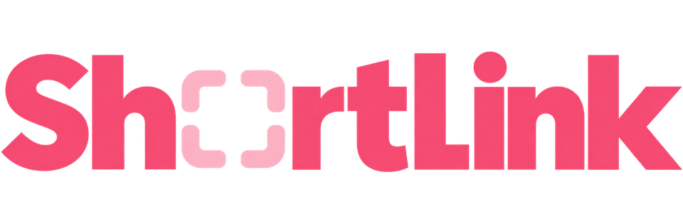
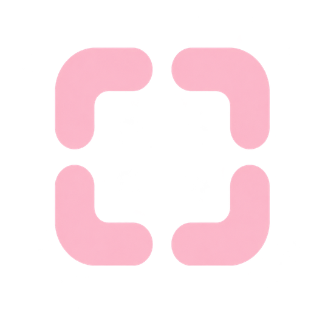
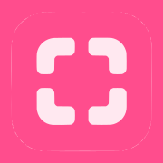

Version 1, October 2026. Identity (logo and colour), typography and tone of voice. Built by Mergepdftool. Thai and English are equal.
| Language | Tagline |
|---|---|
| English | Short links. Your data stays here. |
| Thai | ลิงก์สั้น ข้อมูลอยู่กับคุณ |
Positioning. Short Link gives you short links on your own domain, with clear click numbers. Your click data stays in your own storage.
ตำแหน่งของแบรนด์ Short Link ช่วยให้คุณสร้างลิงก์สั้นบนโดเมนของคุณเอง พร้อมตัวเลขคลิกที่อ่านง่าย ข้อมูลการคลิกเก็บอยู่ในที่เก็บข้อมูลของคุณเอง
Personality. Plain, honest, quick. Like a good form, not a dashboard full of noise.
| Pillar | English | Thai |
|---|---|---|
| Private | Your click data stays in your own storage. | ข้อมูลการคลิกเก็บอยู่ในที่เก็บข้อมูลของคุณ |
| Simple | One box, one button. | กล่องเดียว ปุ่มเดียว |
| Bilingual | Thai and English are equal. | ภาษาไทยและภาษาอังกฤษเท่าเทียมกัน |
The logo is the wordmark with four brackets in the "o" position. The brackets are a scan frame: it is the one visual idea in the brand.



| Colour | Hex | RGB | Use | Contrast |
|---|---|---|---|---|
| Navy | #061E45 | 6, 30, 69 | All text and headings. Navy wordmark. | 16.41:1 on white. 14.86:1 on blush. |
| Deep Rose | #D01170 | 208, 17, 112 | Primary button (one per screen), links, icons, focus ring. | 5.26:1 on white (white button text passes). 4.76:1 on blush. |
| Signal Pink | #F64B72 | 246, 75, 114 | Logo, favicon, progress bar, large accents (24 px and up). | 3.40:1 on white. Fails for text. 3.08:1 on blush. |
| Bracket pink | #FCB8CA | 252, 184, 202 | The four brackets in the logo only. | 1.63:1 on white. Decorative only. |
| Error | #B42318 | 180, 35, 24 | Errors only: outline, label and icon. Never for promotions or "new". | 6.57:1 on white. |
Manrope for English. Noto Sans Thai for Thai. Manrope has no Thai letters, so Thai text always uses Noto Sans Thai.
| Role | English | Thai | Size |
|---|---|---|---|
| Hero heading | Manrope 800, tight tracking | Noto Sans Thai 700, no tracking | 40 px desktop, 30 px phone |
| Section heading | Manrope 700 | Noto Sans Thai 700 | 24 px |
| Body | Manrope 400, line height 1.6 | Noto Sans Thai 400, line height 1.7 | 16 px |
| Eyebrow label | Manrope 700, uppercase, +6% tracking | Noto Sans Thai 600, no capitals, no tracking | 13 px |
| Button | Manrope 600 | Noto Sans Thai 600 | 15 px |
Thai rules. No letter-spacing. No uppercase styling (Thai has no capitals). Line height about 1.7. Keep short phrases on one line.
Cards are white with a thin line border and a 12 px radius. Icon tiles are blush with a navy or Deep Rose line icon.
| Principle | English | Thai |
|---|---|---|
| 1. Say what happened | "Short link created." | สร้างลิงก์สั้นแล้ว |
| 2. Short sentences | "Copy it and share it." | คัดลอกแล้วนำไปแชร์ได้เลย |
| 3. Promise only what it does | "Click data stays in your own storage." | ข้อมูลการคลิกเก็บอยู่ในที่เก็บข้อมูลของคุณ |
| 4. Name the action on the button | "Shorten", not "Submit" | "ย่อลิงก์" ไม่ใช่ "ส่งข้อมูล" |
| 5. No polite particles in product text | Keep product messages neutral. | ไม่ใช้คำลงท้าย ครับ หรือ ค่ะ ในข้อความของระบบ |
| Moment | English | Thai |
|---|---|---|
| Main button | Shorten | ย่อลิงก์ |
| Result label | Your short link | ลิงก์สั้นของคุณ |
| Copy / copied | Copy / Copied | คัดลอก / คัดลอกแล้ว |
| Missing URL | Please enter a URL. | กรุณาใส่ลิงก์ |
| Created | Short link created | สร้างลิงก์สั้นแล้ว |
| Empty list | No links yet. Shorten your first link above. | ยังไม่มีลิงก์ เริ่มย่อลิงก์แรกด้านบนได้เลย |
| Delete | Delete this link? The short URL will stop working. | ลบลิงก์นี้หรือไม่ ลิงก์สั้นจะใช้งานไม่ได้อีก |
| Login gate | Log in to manage links | เข้าสู่ระบบเพื่อจัดการลิงก์ |
| Status: disabled | Disabled | ปิดใช้งาน |
| Status: expired | Expired | หมดอายุ |
| Saved | Saved | บันทึกแล้ว |
| English | Thai | Why |
|---|---|---|
| "Best" | ที่สุด | Cannot be proved. |
| "#1" | อันดับ 1 | Cannot be proved. |
| "Guaranteed" | การันตี | No promise like this. |
| "100% free" or "unlimited" | ฟรี 100% หรือ ไม่จำกัด | Only if the plan really says so. |
| "Limited time", "hurry" | รีบเลย | Fake urgency. |
| "Secure" without saying how | ปลอดภัย โดยไม่บอกว่าอย่างไร | Say what is true: "Click data stays in your own storage." |
Contrast is measured with the WCAG 2.1 formula from the hex values. Colour shares follow the Mergepdftool pattern. Logo colours are sampled from the pack's own pixels, so values can differ by one or two points between files. Audience and business notes are not in this guide.